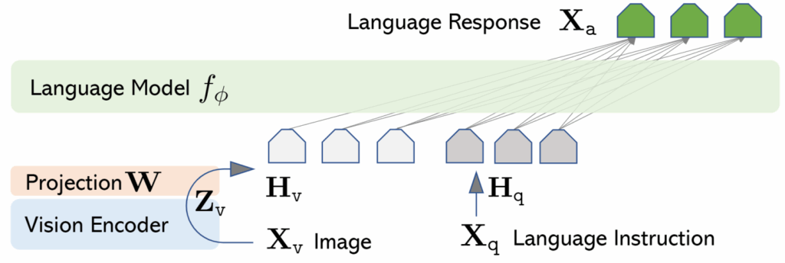
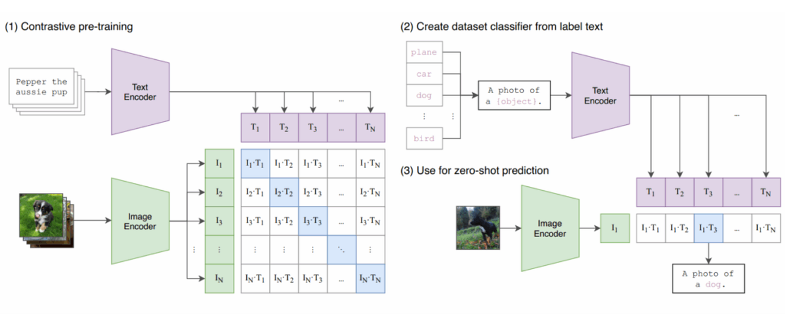

Introduction to Multimodality with LLaVA
Introduction.
July 15, 2025 · LLaVA, VLLM, Multimodality
In the last couple of years, I have worked mainly with large language models, training, fine-tuning, prompting and so on, since this was highly requested in the market and by users. But I believe that LLMs that work mainly on text is only the beginning of GenAI. At a certain point, everybody will want physical AI, where models can see, hear, feel, and reason in a more grounded, human way.
So let’s get started with multimodality. In this notebook, I introduce LLaVA, an architecture capable of interpreting both images and text to generate multimodal responses.
In this tutorial, we are going to use a lighter-weight component suitable to run the notebook on a free-tier environment such as Google Colab.
The components we are going to use are:
1️⃣ CLIP-ViT B/32 as the image encoder
2️⃣ TinyLlama-1.1B as the language model
3️⃣ A 2-layer MLP adapter to bridge the two

Setup
Before we can dive into the code, let’s set up our environment.
Let’s first install the datasets library.
!pip install -U datasetsWe now need to import the required packages from Hugging Face and PyTorch. These imports provide pre-trained models and utilities for multimodal processing.
import json
from pathlib import Path
import requests
import safetensors
import torch
from datasets import load_dataset
from huggingface_hub import hf_hub_download
from PIL import Image
from transformers import (
AutoConfig,
AutoTokenizer,
LlamaTokenizer,
LlavaConfig,
LlavaForConditionalGeneration,
LlavaProcessor,
Seq2SeqTrainer,
Seq2SeqTrainingArguments,
)
from transformers.models.clip.modeling_clip import CLIPVisionModel
from transformers.models.clip.image_processing_clip import CLIPImageProcessorDownload pre-trained model components
Our LLaVA model will be composed of:
- A pre-trained CLIP encoder openai/clip-vit-base-patch32

- A pre-trained Tiny LLaMA decoder TinyLlama/TinyLlama-1.1B-Chat-v1.0
- A 2-layer MLP projector between the two
The hf_hub_download is a hub we are exploring in order to retrieve pre-trained weights:
vision_backbone_name = "openai/clip-vit-base-patch32"
text_backbone_name = "TinyLlama/TinyLlama-1.1B-Chat-v1.0"_ = hf_hub_download(
vision_backbone_name, filename="pytorch_model.bin", local_dir="/content"
)
_ = hf_hub_download(
text_backbone_name, filename="model.safetensors", local_dir="/content"
)Model
Instantiate a new LLaVA model
Let’s now instantiate a new LlaVA model. As explained above, a LlaVA model is composed of two parts, a visual encoder and a textual decoder that we have just downloaded.
vision_config = AutoConfig.from_pretrained(vision_backbone_name).vision_config
text_config = AutoConfig.from_pretrained(text_backbone_name)We specify the backbone models in the LlaVA config. We then instantiate the actual model with LlavaForConditionalGeneration(llava_config).
llava_config = LlavaConfig(vision_config=vision_config, text_config=text_config)model = LlavaForConditionalGeneration(llava_config).cuda()
modelPerform some surgical operations
Image source: https://unsplash.com/photos/doctor-having-operation-E285pJbC4uE
Previously, we said we could construct an LLaVA model by starting from a pre-trained image encoder and a pre-trained LLM. Let’s do just that!
The original LLaVA model is initialised from a CLIP-ViT L/14 and a Vicuna v1.5 7B. To make things more manageable with the resources provided by the free plan of Google Colab, we’ll use a CLIP-ViT B/16 and a TinyLlama 1.1B.
The only component we’ll train is a 2-layer MLP adapter in between them.
In order to use the CLIP and TinyLlama models, we need to load their pre-trained weights. But these weights can come in different formats like .safetensors or .bin. The load_weights function handles this for us. It checks the file type and calls the right loading function.
def load_weights(path_to_weights: str):
if path_to_weights.endswith(".safetensors"):
return load_safetensors_weights(path_to_weights)
elif path_to_weights.endswith(".bin"):
return load_bin_weights(path_to_weights)
else:
raise ValueError(f"Unsupported weights file: {path_to_weights}")
def load_bin_weights(path_to_weights: str):
return torch.load(path_to_weights, weights_only=True)
def load_safetensors_weights(path_to_weights: str):
return safetensors.torch.load_file(path_to_weights)vision_backbone_state_dict = load_weights("/content/pytorch_model.bin")
text_backbone_state_dict = load_weights("/content/model.safetensors")Inject the vision backbone’s weights into the model
The next lines loads the weights into the vision part of the model. We set strict=False to be flexible since it allows us to skip any weights that don’t perfectly match the model’s expected structure.
incompatible_keys = model.vision_tower.load_state_dict(
vision_backbone_state_dict, strict=False
)
assert len(incompatible_keys.missing_keys) == 0, (
f"Missing keys in state dict: {incompatible_keys.missing_keys}"
)
incompatible_keys.unexpected_keysInject the text backbone’s weights into the model
Same logic as before, but also for the text model.
incompatible_keys = model.language_model.load_state_dict(
text_backbone_state_dict, strict=True
)Freeze the pre-trained components
We want now to freeze the backbone visual and text models, because we don’t want to update their weights while training.
We will only train the small adapter (the MLP that connects vision and language), which is much lighter and faster to train.
_ = model.vision_tower.requires_grad_(False)
_ = model.language_model.requires_grad_(False)# Then we define a helper function to count model parameters
def count_parameters(model, trainable_only=False):
return sum(
p.numel()
for p in model.parameters()
if not trainable_only or p.requires_grad
)
print(f"Total parameters: {count_parameters(model)}")
print(f"Trainable parameters: {count_parameters(model, trainable_only=True)}")Processor
Before feeding some text into our model, we need to convert words into numbers. This is what the tokenizer is needed for.
tokenizer = LlamaTokenizer.from_pretrained(
text_backbone_name, additional_special_tokens=["<image>", "<pad>"]
)
tokenizer.pad_token_id = 32001Below is the format we’ll use to chat with our LLaVA model.
The first part is the so-called system prompt, which contains general guidelines for how the model should respond to the user.
The second part is a Jinja template (basically code) that determines how the conversation is rendered based on some structured input (see example below).
LLAVA_CHAT_TEMPLATE = (
"A chat between a curious user and an artificial intelligence assistant. The assistant gives helpful, detailed, and polite answers to the user's questions. "
"{% for message in messages %}{% if message['role'] == 'user' %}USER: {% else %}ASSISTANT: {% endif %}{% for item in message['content'] %}{% if item['type'] == 'text' %}{{ item['text'] }}{% elif item['type'] == 'image' %}<image>{% endif %}{% endfor %}{% if message['role'] == 'user' %} {% else %}{{eos_token}}{% endif %}{% endfor %}"
)
tokenizer.chat_template = LLAVA_CHAT_TEMPLATEsample_messages = [
{
"content": [
{
"index": 0,
"text": None,
"type": "image"
},
{
"index": None,
"text": "\
What potential activities might be popular at this location?",
"type": "text"
}
],
"role": "user"
},
{
"content": [
{
"index": None,
"text": (
"At this location, with a sandy path leading to the ocean where multiple boats, including "
"sailboats, are moored, popular activities might include boating, sailing, swimming, and "
"beachcombing. Additionally, the sandy path and shoreline provide an ideal setting for leisurely "
"strolls and picnics, while the ocean view offers a serene environment for relaxation and "
"photography. Depending on the specific area and available facilities, other water sports such as "
"kayaking, paddleboarding, and snorkeling could also be prevalent."
),
"type": "text"
}
],
"role": "assistant"
}
]Let’s apply the chat template to our samples.
tokenizer.apply_chat_template(
sample_messages, tokenize=False, add_generation_prompt=False
)At this point we’ve set up our tokenizer and downloaded the vision model. We bring them together into one unified processor.
processor = LlavaProcessor(
image_processor=CLIPImageProcessor.from_pretrained(vision_backbone_name),
tokenizer=tokenizer,
patch_size=model.config.vision_config.patch_size,
)
processor.chat_template = LLAVA_CHAT_TEMPLATESince we added special tokens like <image> and <pad> to our tokenizer earlier, the model needs to adjust its vocabulary to understand them too
model.resize_token_embeddings(len(tokenizer), pad_to_multiple_of=8)Dataset
Let’s download the dataset we are going to use from Hugging Face.
The dataset containing samples of image-text couples is publicly available and can be found here.
train_dataset = load_dataset(
"HuggingFaceH4/llava-instruct-mix-vsft", split="train", streaming=True
)What do our training examples look like?
next(iter(train_dataset))How do we build a batch of examples?
The following function takes raw image-text examples and turns them into model-ready inputs. It formats the messages using the chat template, processes both the text and image with the LlavaProcessor we defined previously, and creates proper training labels while ignoring padding.
def get_data_collator(processor, ignore_index):
def collate_examples(examples):
# Extract texts and images from the raw examples
texts = []
images = []
for example in examples:
messages = example["messages"]
text = processor.tokenizer.apply_chat_template(
messages, tokenize=False, add_generation_prompt=False
)
texts.append(text)
images.append(example["images"][0])
# Process the inputs (tokenize text and transform images)
batch = processor(texts, images, return_tensors="pt", padding=True)
# Create labels
labels = batch["input_ids"].clone()
if processor.tokenizer.pad_token_id is not None:
labels[labels == processor.tokenizer.pad_token_id] = ignore_index
batch["labels"] = labels
return batch
return collate_examples
#NOTE: this does a bit more than a collate function should...Training
Let’s finally define the training arguments, including batch size, learning rate, total steps, and use mixed precision (fp16) for speed. We also avoid saving checkpoints to keep things light. Then we wrap everything into a Seq2SeqTrainerpassing in the model, dataset, and our custom collator for image-text inputs.
args = Seq2SeqTrainingArguments(
output_dir="/content/training_output",
per_device_train_batch_size=2,
gradient_accumulation_steps=4,
learning_rate=2e-4,
max_steps=350,
lr_scheduler_type="cosine_with_min_lr",
lr_scheduler_kwargs={"min_lr": 2e-5},
warmup_ratio=0.05,
logging_strategy="steps",
logging_steps=5,
fp16=True,
remove_unused_columns=False, # Important!
optim="adamw_torch",
report_to="none",
save_strategy="no", # let's not save the checkpoint to disk, otherwise it'll take 5 mins
)
trainer = Seq2SeqTrainer(
model=model,
args=args,
data_collator=get_data_collator(
processor, ignore_index=model.config.ignore_index,
),
train_dataset=train_dataset,
)trainer.train()Inference
To be noted that to make sure inference works as expected you should use heavier models, and train for longer time.
We’ll use this image for inference:
conversation = [
{
"content": [
{
"type": "image"
},
{
"text": "\
What is represented in the image?",
"type": "text"
}
],
"role": "user"
}
]In this cell block as an example, we load an image from a URL and format a conversation using the chat template. The processor turns both into tensors. Then we move the input to the model’s device and generate a response, letting the model describe the image based on the user’s prompt.
image_url = "https://llava-vl.github.io/static/images/monalisa.jpg"
inputs_for_generation = processor(
images=Image.open(requests.get(image_url, stream=True).raw),
text=processor.apply_chat_template(conversation, add_generation_prompt=True),
return_tensors="pt",
)
inputs_for_generation = inputs_for_generation.to(device=model.device)
output = trainer.model.generate(
**inputs_for_generation, max_new_tokens=200, do_sample=False
)print(processor.decode(output[0], skip_special_tokens=True))Extensions and improvements
- Use a larger image encoder (e.g. CLIP-ViT Large) and LLM (e.g. Llama 3.1 8B)
- Train for longer. It takes some time for the model to figure out how to follow instructions in the presence of image features
- Follow the multi-stage training procedure adopted by the original LLaVA
- Stage 1: Pre-training for Feature Alignment –> train the model on single-turn instruction data, where it is asked to briefly describe the picture. Image encoder and LLM are frozen
- Stage 2: Fine-tuning End-to-End –> train the model on multi-turn instruction data. Only the image encoder is frozen
Working demo: huggingface.co/spaces/badayvedat/LLaVA
Conclusion
I think this small project is interesting to better understand how multimodal models like LLaVA work. Even if we used smaller models, the main idea is the same: combine vision and language into one system that can understand images and talk about them.
Of course, the results obtained in this toy example are not really good; there is a lot of space for improvement. But making LLaVA work in an environment with limited resources is quite challenging
Follow me on Medium if you like this article!
 Linkedin ️| X (Twitter) | Websitelinkedin.com
Linkedin ️| X (Twitter) | Websitelinkedin.com